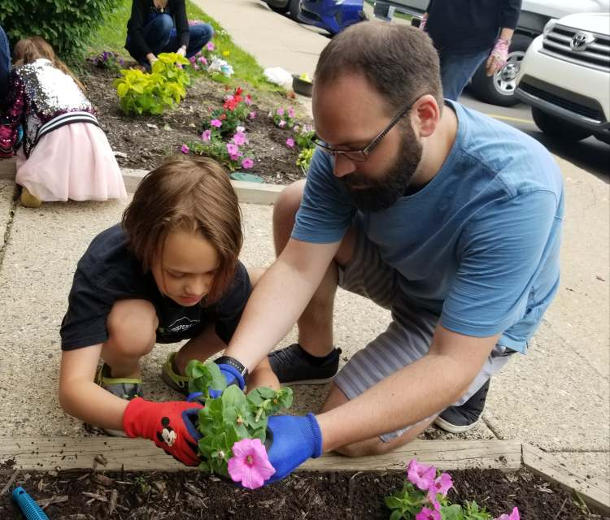

Spiritual Education of Children
“Bahá’ís see the young as the most precious treasure a community can possess. In them are the promise and guarantee of the future. Yet, in order for this promise to be realised, children need to receive spiritual nourishment. In a world where the joy and innocence of childhood can be so easily overwhelmed by the aggressive pursuit of materialistic ends, the moral and spiritual education of children assumes vital importance.” — Bahai.org
“Especially during the early years of childhood, great emphasis is placed on the development of spiritual qualities and on those beliefs, habits and patterns of conduct that constitute the essential attributes of a spiritual being.” — Ruhi.org
The children’s classes seek to create a nurturing environment for children, with lessons to learn about spiritual qualities and the attributes of an upright character. The teachers seek to cultivate virtuous habits and attitudes within the children, and kindle their relationship with and love for God.
The training institute is a system of distance learning that trains people to deliver children's classes, empowers community members to become childrens class teachers.
“Ultimately, then, the purpose of the training institute is to build the capacity of individuals to meet the many needs of growing, vibrant communities.”
— The Universal House of Justice, Turning Point
Get Involved
- Enroll your child in a local children’s class »
- Teach a children's class »
- Learn more about children’s classes »
Guidance
Resources
- Ruhi Book 3 (Ruhi.org)
- Books for children ages 6-8 (Baha'i Bookstore)
- Books for children ages 9-11 (Baha'i Bookstore)
- Baha'i Prayers for Children (Baha'i Reference Library)
Stories about Children's Classes
Copyright © The Regional Bahá’í Council of the Midwestern States